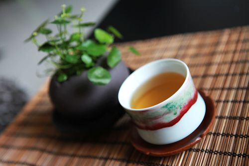

那些遗失的下午。 @ Jun 07, 2010
工作，让我们遗失多少个美妙的下午。
一如，那些遗失的生活。
友说：生活不仅仅是关于“在一起”，它也关于“被分离”。
借用信乐团的这首“离歌”，表达一下无奈之情，虽然它是一首情歌。


工作，让我们遗失多少个美妙的下午。
一如，那些遗失的生活。
友说：生活不仅仅是关于“在一起”，它也关于“被分离”。
借用信乐团的这首“离歌”，表达一下无奈之情，虽然它是一首情歌。

« 难忘*甜品 | DRESS BLOG »
17 Responses to “那些遗失的下午。”
2010-06-07
新杯子啊。最近忙吗？更新很多啊。
你能和仙女们一起过周末，已经让我羡慕了。我们各自享受自己拥有的吧。：-）
2010-06-07
新杯子，你觉得怎么样？
正是因为快乐，才对比出那些本该拥有的美好下午。。。不好意思，我知道你周末还在加班。
2010-06-07
土豆这表情帅翻了
2010-06-07
很喜欢这两张，土豆越来越可爱了
2010-06-07
土豆这张好，新杯子很山水。
2010-06-08
土豆的眼睛，让我想起了“黑眼豆豆”~ 哈哈
2010-06-08
土豆超可爱.我现在对这些宠物也有好感了.我以前不大喜欢宠物的.看到猫和狗都要绕开来,总觉得害怕.
2010-06-08
现在在多哈，晚上到阿联酋。中东出差几天，觉得这些国家孤独且无趣。每天却期待着你的更新，使我感觉温暖。6月底应有出差机会到杭州，如果时间合时转道去找你。
2010-06-08
去中东可以购物啊，物价比香港便宜吧？来吧，宝贝儿，南京张开怀抱迎接你！
2010-06-09
信乐团 这歌很好
第一次忍不住留言，谢谢茶。。
————————————————
一开始我只相信 伟大的是感情
最后我无力的看清 强悍的是命运
2010-06-09
这个杯子真漂亮！有感觉！其实我还蛮喜欢阿信的《海阔天空》的，虽然名字起的让很多人骂，但歌词写的不错
2010-06-09
在我的生活中，分离一直是主题。
2010-06-09
你好！常常看你的博客，很喜欢！明天要来南京办事，中午在北京西路天目大厦附近，想问问你那里有什么好吃的？谢谢啊！
2010-06-09
去湖南路美食一条街转转吧。
2010-06-09
lilian Says:在我的生活中，分离一直是主题。
那你一定比俺们坚强！
2010-06-11
你好！我昨天去了湖南路美食一条街，就是狮子街对吧，吃的湖南毛家饭馆。谢谢你啊！
2010-06-11
毛家饭馆。。。？意外！遗憾。你在南京却选择去吃湖南菜？为什么没去“南京大排挡”？里面有一些南京特色菜和小吃，口味也不错。
Leave A Reply
存档只读，评论已关闭。